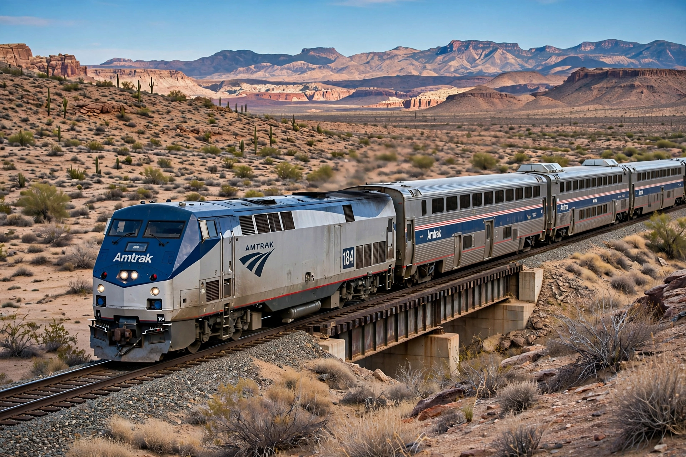

Amtrak
From Wikipedia, the free encyclopedia

Amtrak in the American West.Amtrak, the National Railroad Passenger Corporation, is the national passenger rail company of the United States, created by Congress in 1970 and beginning operations on 1 May 1971 to relieve private railroads of money-losing passenger trains. It operates intercity services in 46 states over some 34,000 km of route (mostly on freight railroads\' tracks), carrying a record ~32.8 million passengers in fiscal 2024. Its flagship is the Northeast Corridor (Washington–New York–Boston) with the high-speed Acela trains.
Creation and structure
By 1970 US passenger rail was collapsing; the Rail Passenger Service Act created Amtrak as a for-profit corporation owned by the federal government. Railroads paid to join and handed over equipment; Amtrak kept most long-distance routes while freight companies retained the tracks and dispatching, sowing decades of delay disputes.
Services
Beyond the Northeast Corridor (its only fully owned major line, and its financial engine), Amtrak runs state-supported corridors (California, Illinois, Pacific Northwest) and 15 long-distance trains such as the California Zephyr, Empire Builder and Southwest Chief. New Airo trainsets and the long-delayed Acela successor (NextGen Acela, from Alstom) are renewing the fleet in the mid-2020s.
Funding politics
Amtrak has never covered its costs nationally and depends on federal appropriations, perennially debated: supporters cite congestion, rural access and emissions; critics cite losses on long-distance routes. The 2021 infrastructure law gave Amtrak its largest-ever funding infusion (about $66 billion for rail, including Amtrak programmes).